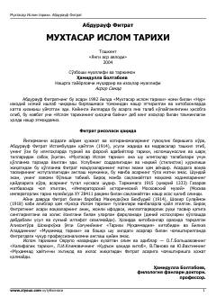

MIFitrat qalamiga mansub Islom tarixining qisqacha va xolis bayoni.
Bu asar mashhur o'zbek ma'rifatparvari Abdurauf Fitrat tomonidan yozilgan bo'lib, Islom dinining paydo bo'lishi, Payg'ambar Muhammad (s.a.v.) hayoti va Islom olamining taraqqiyoti haqida qisqacha ma'lumot beradi. Asar dastlab jadid maktablari talabalari uchun qo'llanma sifatida yozilgan va 1915 yilda nashr etilgan. Kitob Islom tarixini xolisona va milliyparvarlik ruhi bilan yoritgani bilan boshqa shu mavzudagi asarlardan ajralib turadi.